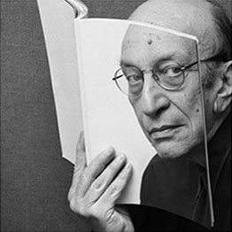
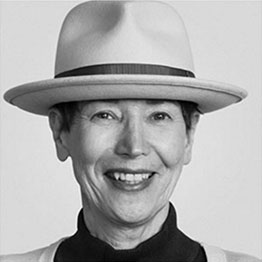
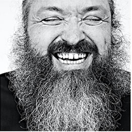

-

MILTON GALSER
To many, Milton Glaser is the embodiment of American graphic design during the latter half of this century. His presence and impact on the profession internationally is formidable. Immensely creative and articulate, he is a modern renaissance man — one of a rare breed of intellectual designer-illustrators, who brings a depth of understanding and conceptual thinking, combined with a diverse richness of visual language, to his highly inventive and individualistic work.
LEARN MORE -

APRIL GREIMAN
Greiman first studied graphic design in her undergraduate education at the Kansas City Art Institute, from 1966–1970. She then went on to study at the Allgemeine Künstgewerberschule Basel, now known as the Basel School of Design (Schule für Gestaltung Basel) in Basel, Switzerland (1970–1971). She was also a student of Armin Hofmann and Wolfgang
LEARN MORE -

BRUCE MAU
From 1985-2010, Mau was the creative director of Bruce Mau Design (BMD), and in 2003, he founded the Institute Without Boundaries in collaboration with the School of Design at George Brown College, Toronto. In 2010 Mau went on to co-found The Massive Change Network in Chicago with Bisi Williams. In 2015, Freeman, a global provider of brand experiences, appointed him Chief Design Officer. Mau works with Freeman to drive innovation in the events industry.
LEARN MORE